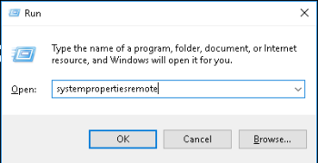
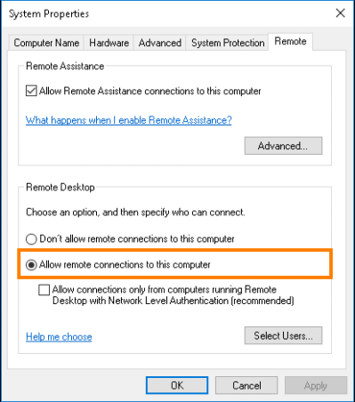
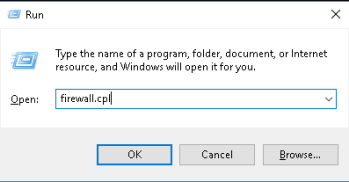
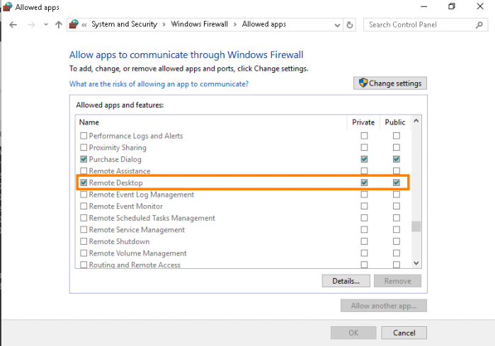

How enable rdesktop directly from Windows
Change settings and firewall permissions on the Windows machine to allow rdesktop connection
Windows key+r combo and write
systempropertiesremote to view the System Properties dialog.
In the Remote tab check “
Allow remote connections to this computer”
Windows key+r and type
firewall.cpl to open Control Panel's Windows Firewall settings
On the window that is opened select “
Allow an app or feature through Windows Firewall” link,
then select
Remote Desktop and allow Private and Public access permissions.
